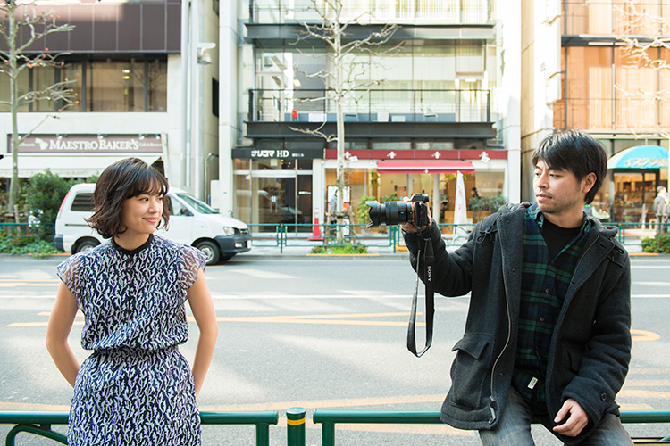
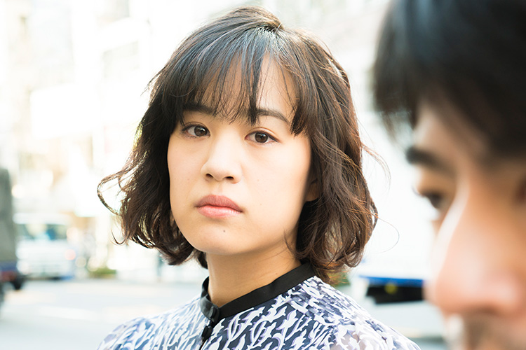
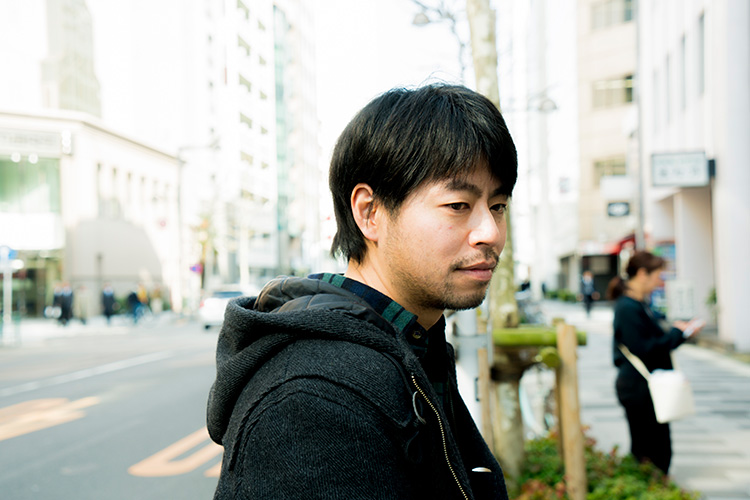
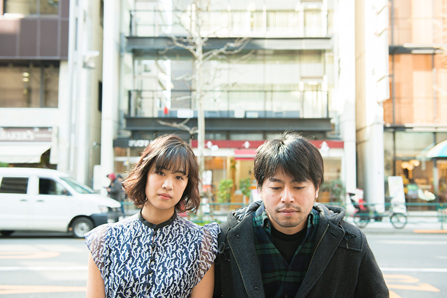

映画賞を総なめにした『舟を編む』（2013）以降もたじろがない手付きで作品を発表し続ける石井裕也監督の最新作『映画 夜空はいつでも最高密度の青色だ』が5月13日より公開される。同時代的な感度で現代詩の地平を拓く女流詩人、最果タヒの同名詩集の映画化となる本作は、漠然と不安が漂う近視眼的な都会の暮らしの中で、全身を投げ出すように今を生きる２人の男女が心を通わせる恋愛映画。主演の美香役に抜擢されたのが、新人女優、石橋静河。他の誰にも代替不可能と感じさせるほどの存在感で美香を体現しているが、苦闘の連続だったという映画初主演の現場について、２人に話を聞いた。
「明確な意志があったらああはならない。無自覚の面白さですよね。デビューに近い状態でのその無邪気さは貴重なものなんです。」（石井）
演技経験のまだ少なかった石橋静河さんを美香役にキャスティングされた経緯は？
石井：
プロデューサーとの話の中で、この映画にはビジュアル面も含め、新しい気分がどうしても必要で、そのために主演には新人を起用したいとなったんです。それで新人女優を探すわけですけど、実はそれほど探してはいなくて。石橋さんのことは周囲で噂になってたんです。凄いやつが出てきた、と。もっと言ってしまうと、『ぼくたちの家族』（2014）で原田美枝子さん、『ハラがコレなんで』（2011）では石橋凌さんと仕事をさせて頂いていて、彼女のご両親には先にお世話になっているんです。だから最初は、お２人の娘さんというイメージから入った。その流れで一度会ってみて、その後も何度か時間を作って会った上で決めました。
この映画の現場を通して、ご両親を彷彿とさせるものはありましたか？
石井：
原田美枝子さんの若い頃を僕は知っているわけではないので確信を持っては言えないですけど、堂々とした佇まいには通ずるものが、もしかしたらあるかもしれないですね。
石橋：
私は石井監督の『ぼくたちの家族』を以前に観ていて、いつかご一緒できたらなと思っていました。
実際に現場を経験してみて、いかがでしたか？
石橋：
石井監督の現場だからというより、私はちゃんと役を演じるということが初めてに近かったので、脚本を読んで、どうやって役に向き合うかとか、どうやって監督に向き合うかというところから、全てが初めての挑戦でした。とにかく必死だったんです。
石井：
両親にお世話になっているので、申し訳ないなという気持ちが最初は大きかったんだけど、撮影が進むにつれ、その気持ちが減ってきて…。
石橋：
私は、監督と両親に繋がりはあっても、現場では正面から向き合って欲しいと望んでいたので嬉しかったです。
石井：
お世話になった人の娘さんを大切に扱わないといけないという気持ちが減っていった原因が石橋さんにあったからね。
石橋：
私が、ただ監督に言われたことに食らい付いていくことしか出来なくて、監督も私に遠慮している場合じゃない状態で。
石井：
お借りした姿でお返しするっていう目標が一応あったんだけど、そういう気持ちはすぐ無くなったというか、正直一番偉いのは映画であって、映画のためにだったら多少は傷ものになっても仕方ないという気持ちが段々と首をもたげてきたというか…（笑）
石橋：
（笑）

対等な関係を徐々に築いていく過程があったわけですね。
石井：
対等というかむしろ自分の方が下だったかもしれない。演者の方にある種のスキルやテクニックがあれば、悠然と構えていられるんですけど、彼女は初めての現場ということで当然そうじゃないわけで、こちらが必死にならざるを得ない。まあでも必死なのはお互い同じだからイーブンなのかもしれないけど、心情的に上か下かと言われたら下でしたね（笑）
石橋：
私はもっと監督の求めていることに応えたいなって思っていたんですけど、必死にやっても全然辿り着けない。そういう日々だったので、悔しいというか、申し訳ない気持ちが一番にあります。
完成した映画を初めて観た時に率直にどう感じましたか？
石橋：
最初の試写では全く客観視できなくて、観ていても撮影中の記憶が蘇ってきてしまうし、早く劇場から逃げ出したいなって気持ちで。２度目はベルリン映画祭の時に客席で観たんですけど、そこではお客さんの反応を直に体感しながら観られました。そこで初めて素晴らしい映画だなって思えたところはあります。だから、いろんなことを冷静に眺められるようになったというか、撮影した時の思いを整理できるようになったのは、ここ最近です。
石井：
５年は掛かると思うよ。客観的に分析できるようになるには。監督として作品を客観視するのにもそれくらい掛かるし。むしろ、５年ならまだいい方かもしれない。
石橋：
はい。現場でも、言われることに対して頭では分かっていても身体がそのように動かないということの連続で。つまりそれは分かっていないということだと思うんです。５年で分かるように頑張ります。
石井監督は、過去に「子宮で考えて演技して下さい」という言葉で女優に演出をされていたこともあったそうですが。
石井：
それを言ったのは10年近く前のことですね（笑） 当時は女優というか、女性に対してまるで知識が無いからこそ持っていた希望的な感情でした。つまり「子宮で考えて演じてくれ」と言ったところで、言ってる自分の方が意味が分かっていないですから。あわよくばそうなって欲しいというお祈りみたいなものだったんです。今はそんなことは言わないです。女性への畏怖のようなものが下地にあったと思うし、男が知り得ない次元の女性の凄みや強みをちゃんと見せてくれっていう言い方が当時はそれだったんだと思いますね。

美香を演じる上で、石井監督からはどのような演出がありました？
石井：
たぶん「違う」って言葉のみ覚えてるんじゃないかなと思うけど。
石橋：
そうですね。何か言われても私がちゃんと答えを出せないというか、やってみては修正する、やってみては修正するっていうトライ＆エラーのような状態だったので。
基本的には演者に委ねていくやり方だったんですか？
石井：
状況次第ですね。僕のやり方を貫いたところで、受け手は違うわけで、池松君にしても、松田龍平さんにしても、演者それぞれで違う。誤解が面白さを生むというか、誤解した上でそれ以上のものが出てくるっていうのが、俳優と監督のベストな関係だと思うので。それをまずは狙うこと、委ねる、という基本原則はあるんです。ただそうはならないこともあるので言い方、やり方を変えていくわけですよね。で、最終的に「違う」って突き放すしかなくなる場合もある。
ここまで話されているような役柄への葛藤や焦燥は、今という瞬間を生きる劇中の美香の刹那とシンクロしているように感じられました。
石井：
シンクロさせるべきだと思っていました。そうすることでしか突破出来ないくらいに思っていたので。
演じながら、どの程度、自覚的でしたか？
石橋：
（石井監督へ向かって）何で、笑ってるんですか？（笑）
石井：
明確な意志があったらああはならない。無自覚の面白さですよね。デビューに近い状態でのその無邪気さは貴重なものなんです。たぶん次の現場ではああいうお芝居にはならないはずなので。だからからこそ、今度はテクニックが必要になってくると思うけど。
この映画に映る女優としての石橋さんは、二度と見られないものということですよね。
石井：
おそらくそうですね。もし今後も全く成長しなかったとしたらまた話は別ですけど（笑）
「美香はぶっきらぼうで、言葉が強い。不安だから言ってしまうというか、必ずしも全てが本心ではないはずなんです。」（石橋）
慎二を演じた池松さんとのお芝居の呼吸はいかがでしたか？
石橋：
池松さんの方から呼吸を合わせにきてくれたというか、歩みを遅らせて、同じ歩幅で寄り添ってくれていたので、それに助けられたんですけど、それだけだと悔しい。美香と慎二は横に並び立っている関係だから、私も何とかして池松さんを驚かせるくらいのことが出来たらとはずっと思っていました。
強いて言えば、男性である石井監督の視点は美香を受ける側の慎二の方にあったんでしょうか？
石井：
いや、どちらかと言うと、視点は石橋さんと共にあったと思います。
石橋：
美香の視点ってことですね。
石井：
そう。なぜなら、原作の最果さんの詩の目線に女性を感じたので、その目線の先に何があるかを考えたんです。それが慎二なんです。だから、割と僕の視座は美香の方にあったと思うんですよね。だからこそ、美香の芝居を納得がいくものにしたいと感じることが多かった。美香、つまり石橋さんと一緒に慎二を見ていたというか。あと、池松君は頭がいいし、相手の芝居を受けようとするんです。それだけでは昨今の池松君の芝居をなぞるようで、池松君との元々の個人的な関係もあったので、物足りないと思った。今回の映画では、相手を受けようとすること、或いは気遣いみたいなものを池松君から出来る限り取り除きたかったんです。
池松さんのイメージにあまり無かった序盤の饒舌で余裕のない慎二が、徐々に普段の池松さんに近いナチュラルな芝居に変容していく感じは、美香が慎二に心を許していく状況にリンクして見えました。
石井：
そうですね。更に、最終的には慎二が美香を引っ張っていくところまでいきたかった。僕は常に美香側にいたと思います。石橋さんが僕の目線で演じていたと言うとまた語弊がありますけど（笑）

美香と慎二の関係についてどのように捉えましたか。
石橋：
私は恋愛というより同志に近いと思いました。
石井：
いわゆる恋愛という言葉に対する疑念を２人は日常的に抱えているんです。好きという気持ちすら疑いの眼差しを向けてしまうというね。東京なんかで生きていても疑わしいことばかりですから。だから、この関係を敢えて言葉にするなら、あらゆることを疑って何も信じられない２人がある感情を通い合わせていくというものだと思います。
美香と慎二の関係のプラトニックさは、最果さんの紡ぐ言葉の力をより立ち上がらせているようにも感じます。
石井：
個人的に性描写をあまり好まないというのは大前提としてはあって、肉体的な接触というものを大事にしているから逆に描かないところがあるんですよ。劇中で２人が触れ合うのは２度だけなんですけど、どこで人と人が触れ合うのかという部分を大切にしたんです。原作で描かれる細かな感情の部分をどう表現するかを考えていって判断しましたね。撮影中に助監督が、「ここでキスした方がいいんじゃないですかね？」とかって言ってきましたけどね（笑）
石橋：
え、そうだったんですね（笑）知らなかったです。
石井：
「マジっすか？何でそうなるんですか？」って返したけど。夜遅かったせいなのかもしれない（笑）
背景として映し出される実際の渋谷や新宿といったロケーションも、世界観を高めていました。
石井：
この映画には実際の東京の街の風景が必要だったんです。東京を彷徨っている２人のリアリティは、最果さんの原作を映画化する上で必然でした。

石橋さんは原作も読まれましたか？
石橋：
監督と初めてお会いする直前に読みました。
詩である原作には明確な筋はないですが、根底に流れているものは映画に見事にトレースされていました。台本を最初に読んだ時の印象は？
石橋：
原作を読み終えた時、言葉の１つ１つには意味が分からないものもあるのに、うまく言えないんですけど、感覚的にスッと理解できたんです。台本を読んだ時も同じ気持ちになったので、納得感みたいなものはありました。
石井：
書いた本人を前にしたこの状況では、そういう風にしか言えないよね。
石橋：
（笑）
石井：
たぶん、美香が何をどうするかってことに必死だったと思うので、作品全体にまで視野を広げる余裕はなかったんじゃない？
石橋：
そうですね。全体を見ることが出来なかったというか、それどころじゃなかったので。でも、最初に美香の台詞を読んだ時に、何でこんなこと言うんだろうなって思ったんです。美香はぶっきらぼうで、言葉が強い。不安だから言ってしまうというか、必ずしも全てが本心ではないはずなんです。自分で思っている以上のことを言ってしまう女性なんだなって言うのは、読みながら分かってきたことでしたね。
美香のモノローグと、実際に口にして発する台詞との差異が、気持ちを言葉に出来ないもどかしさみたいなものとして表されている気がしました。
石井：
今日、ずっと「必死」って言葉を言っているけど、でも本当にそれに尽きるからね（笑）
最後に。劇中に「スマホで何でも調べられる世の中で知らないことがあることが怖い」という現代人の病理を象徴するような台詞がありました。石橋さんは、東京を生きる若者についてどういう思いがありますか？
石橋：
私もその若者の一員なんですけど…。私は、海外に４年間留学していて、日本に帰って来た時に物凄く窮屈さを感じて、暮らしていくうちに慣れていったんですけど、この映画を観た時にそれを思い出したんです。本当は生きづらいと感じているけど、それを見ない振りをしていた。同じように感じている同世代は多いんじゃないかなって思います。自分の中で誤摩化したりしないと東京で生きていけなくて、闘っている人は多いと思うんです。そう感じさせてくれたのも美香を演じたからで、それまでは私も見ない振りをしていたところがあったので、この映画が気付かせてくれたと思います。